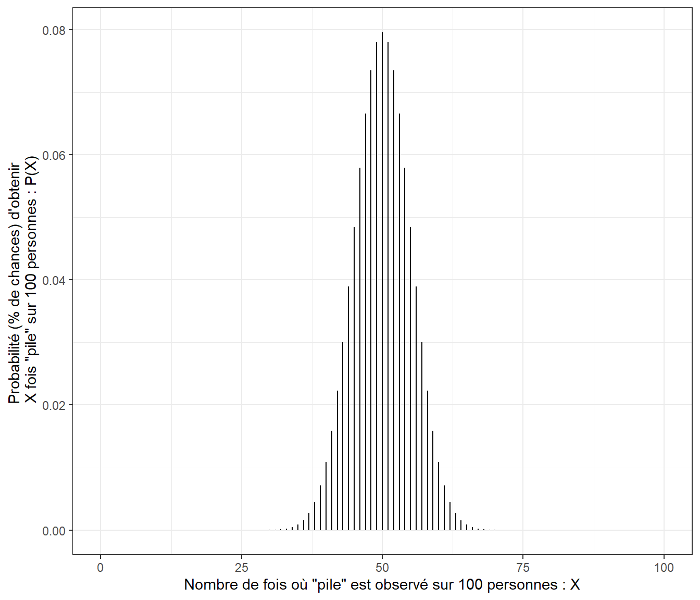
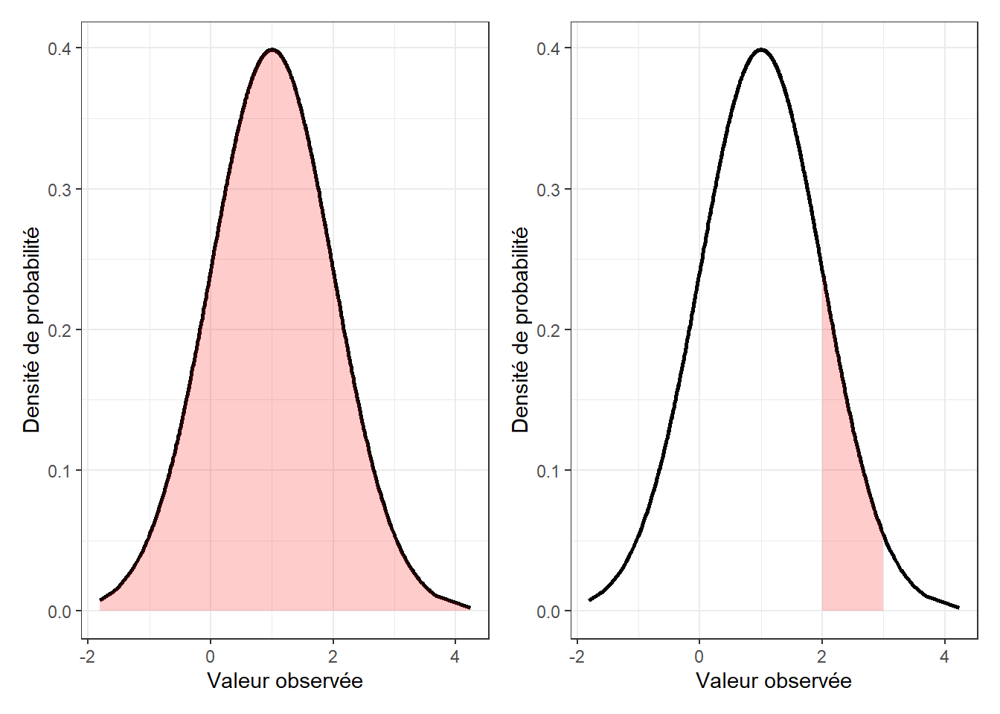
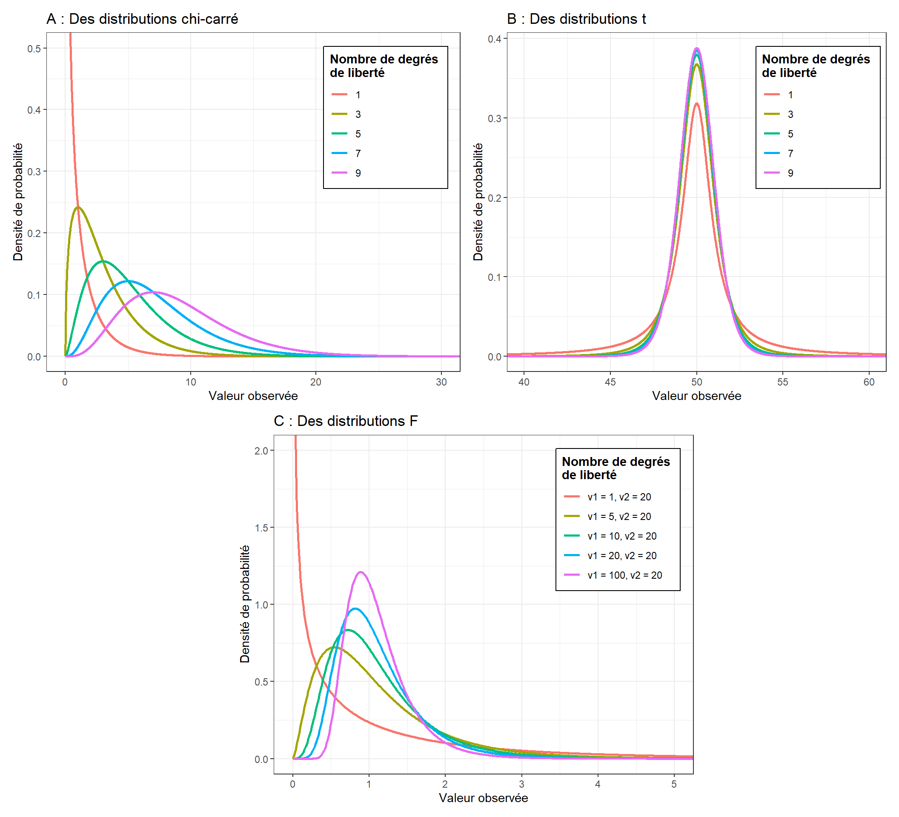
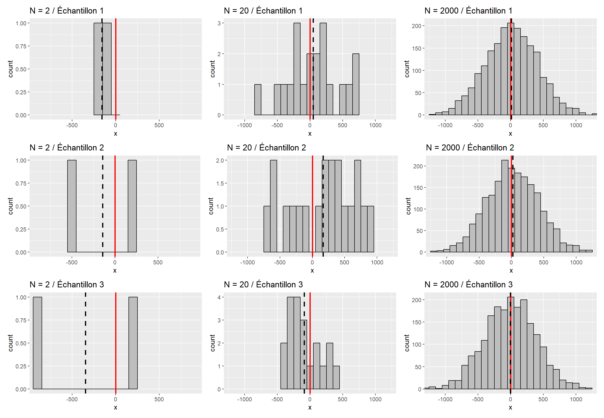
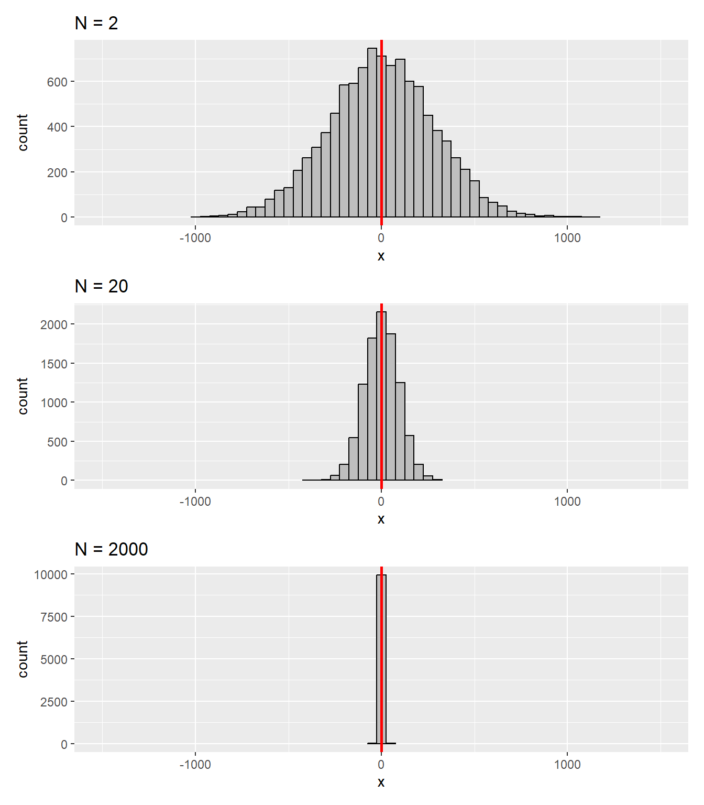
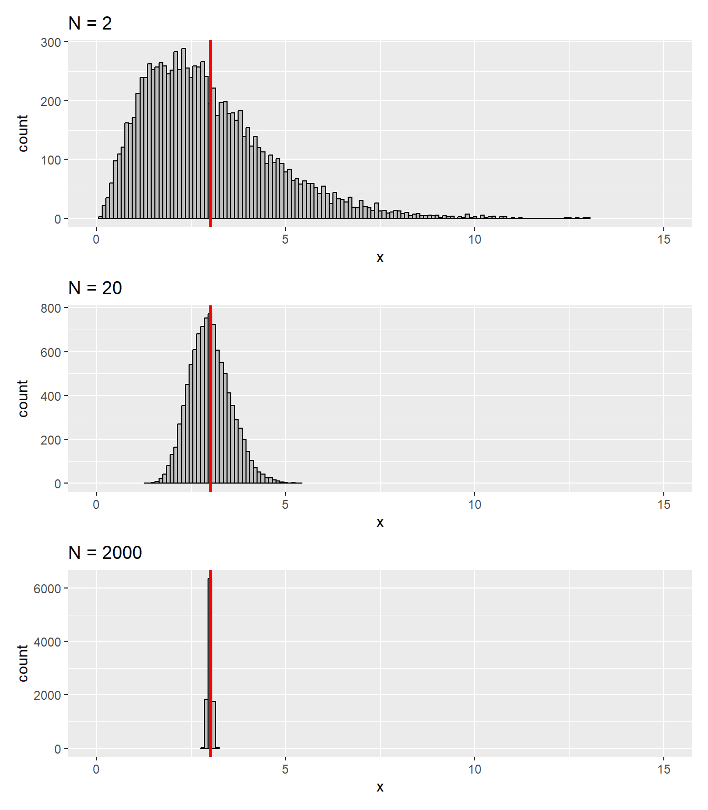

7 Prérequis
1 Préambule
Réaliser une inférence statistique consiste à conclure à propos de quelque chose dans une population d’intérêt (cette chose pouvant se traduire par n’importe quel paramètre statistique : une moyenne, une médiane, une proportion, un coefficient de corrélation, une différence de moyennes, un rapport de cotes, etc.), cela à partir de données prélevées dans un échantillon de cette population. Pour comprendre la mécanique des calculs à mettre en oeuvre pour réaliser une inférence statistique, il est nécessaire d’avoir quelques notions en matière de probabilité. Ce chapitre, qui s’inspire largement du chapitre “Introduction to probability” de l’ouvrage de Danielle Navarro (2018), vise à présenter brièvement ces notions.
2 Lois de probabilité
2.1 Notion de loi de probabilité
Les procédures de calcul pour réaliser une inférence statistique requièrent d’utiliser des lois mathématiques que l’on doit configurer pour déterminer théoriquement les probabilités de rencontrer telle ou telle valeur d’un paramètre statistique donné lorsqu’on étudie un échantillon provenant de la population d’intérêt. Cette démarche implique de comprendre que si un phénomène existe (ou pas) à l’échelle d’une population (chose quantifiable à l’aide de la valeur d’un paramètre statistique donné), l’étude d’un échantillon provenant de cette population ne donnera pas forcément la même valeur pour le paramètre statistique considéré. L’enjeu est alors de pouvoir déterminer la probabilité qui était celle d’obtenir telle ou telle valeur du paramètre statistique considéré avec son échantillon dans le cas où le phénomène étudié existerait (ou pas), cela pour envisager une conclusion quant à la réelle existence ou non du phénomène étudié dans la population d’intérêt.
Ces lois mathématiques utilisées pour faire des inférences statistiques, qu’on appelle aussi des lois de probabilité, donnent directement les valeurs de probabilité d’obtenir telle ou telle valeur du paramètre statistique considéré dans les cas de variables qualitatives. Dans les cas de variables quantitatives, les lois de probabilité ne donnent pas directement les probabilités. En effet, dans ces situations, les lois donnent les densités de probabilité. Ceci est lié au fait que dans ce type de situations, les probabilités concernent le fait d’avoir des valeurs appartenant à des intervalles donnés, et non pas d’avoir une valeur précise. Cela implique que pour obtenir la probabilité de rencontrer une valeur appartenant à un intervalle donné, il ne faut pas prendre la valeur directement donnée par la loi de probabilité, mais l’intégrale (i.e., l’aire sous la courbe de densité de probabilité) correspondant à l’intervalle de valeurs considéré. Ce qui suit vise à décrire et illustrer des lois de probabilité typiquement utilisées dans les procédures de calcul servant à réaliser des inférences statistiques.
2.2 La loi binomiale
La loi binomiale est une loi mathématique qui concerne les situations où seulement deux résultats sont possibles, comme par exemple “succès” et “échec”, “pile” et “face”, “0” et “1”, etc. Un exemple classique où l’on est en présence d’une variable binomiale est celui où l’on demande à \(N\) personnes de lancer une fois une pièce non truquée, avec par conséquent “pile” et “face” comme seuls résultats possibles et autant de chances de tomber sur “pile” que sur “face” à chaque lancer (\(\theta\) = 0.5, soit une chance sur deux). Une fois les essais de toutes les personnes terminés, la distribution qui en résulte contient alors la proportion de personnes qui ont obtenu “pile” et la proportion de personnes qui n’ont pas obtenu “pile” (donc “face”). Lorsque le nombre \(N\) d’essais ou de participants et la probabilité d’avoir tel ou tel résultat (\(\theta\)) sont connus, la loi binomiale, qu’on note \(X \sim B(\theta, N)\), permet de connaître la probabilité \(P(X)\) d’avoir \(X\) succès (e.g., \(X\) fois “pile”) sur les \(N\) essais ou participants. La formule de cette loi est montrée ci-dessous :
\[P(X | \theta, N) = \frac{N!}{X!(N-X)!}\theta^X(1-\theta)^{N-X}\]
La Figure 7.1 illustre une loi binomiale (avec \(N\) = 100 et \(\theta\) = 0.5) qui pourrait s’appliquer au cas d’un lancer de pièce non truquée. Cette figure montre que même si une pièce est non truquée (\(\theta\) = 0.5), il est tout à fait possible qu’il y ait plus de personnes à obtenir “pile” plutôt que “face” et inversement sur un échantillon de 100 personnes. Cependant, ce que montre aussi la figure, c’est que si la pièce est non truquée, les chances restent les plus fortes pour l’obtention de 50 % de personnes avec “pile” et avec “face” pour un lancer de pièce.
Plusieurs fonctions R peuvent être utilisées pour obtenir des informations liées aux probabilités données par une loi binomiale. Ces fonctions sont montrées ci-dessous.
# Fonction pour déterminer la probabilité d'obtenir précisément x succès
# (ici 50) à partir de N essais/personnes (ici 100) et d'une probabilité
# de succès donnée (ici 0.5)
dbinom(x = 50, size = 100, prob = 0.5)[1] 0.07958924# Fonction pour déterminer la probabilité d'obtenir un nombre de succès
# inférieur ou égal à q (ici 50) à partir de N essais/personnes (ici 100)
# et d'une probabilité de succès donnée (ici 0.5)
pbinom(q = 50, size = 100, prob = 0.5)[1] 0.5397946# Fonction pour déterminer la valeur pour laquelle il y a une probabilité p
# d'obtenir une valeur inférieure ou égale à la valeur définie à partir de N
# essais/personnes (ici 100) et d'une probabilité de succès donnée (ici 0.5)
qbinom(p = 0.6, size = 100, prob = 0.5)[1] 512.3 La loi normale et lois apparentées
La loi normale, ou encore loi gaussienne, qu’on note \(X \sim N(\mu, \sigma)\), avec \(\mu\) la moyenne de la variable, et \(\sigma\) l’écart-type de la variable, est une loi qui permet de déterminer la probabilité de rencontrer une valeur dans un intervalle donné en lien avec la formule montrée ci-dessous :
\[p(X | \mu, \sigma) = \frac{1}{\sqrt{2\pi}\sigma} exp(-\frac{(X-\mu)^2}{2\sigma^2}),\] \(p(X | \mu, \sigma)\) étant la densité de probabilité correspondant à la valeur \(X\). Il s’agit bien ici de la densité de probabilité, et non pas de la valeur de la probabilité d’obtenir une valeur précise. Pour mieux comprendre les valeurs que donne cette loi mathématique, regardons la Figure 7.2 (graphique de gauche). Sur cette figure, la courbe noire représente les valeurs données par la fonction définissant la loi normale avec \(\mu\) = 1, et \(\sigma\) = 1. Ces valeurs en réalité n’ont pas vraiment d’intérêt en soi. Par contre, elle permettent de délimiter une aire (en rouge) entre elles et l’axe horizontal, la valeur de cette aire étant pour le coup la probabilité d’obtenir une valeur incluse dans l’intervalle de valeurs relatif à l’aire sous la courbe considérée. Ainsi, l’aire sous l’ensemble de la courbe représentant la densité de probabilité est associée à une probabilité de 1 (il y a par définition, lors d’un tirage au sort, 100 % de chances de rencontrer une valeur située entre le minimum et le maximum de la variable modélisée à l’aide de cette loi). Dans la même veine, le graphique de droite de la Figure 7.2 montre une aire sous la courbe (en rouge) dont la valeur est la probabilité d’obtenir une valeur comprise en 2 et 3 lorsqu’on tire au sort une observation en provenance de la population représentée par une loi normale de moyenne 1 et d’écart-type 1, la probabilité étant ici de 14 %.

Plusieurs fonctions R peuvent être utilisées pour obtenir des informations liées à la distribution d’une loi normale donnée. Ces fonctions sont montrées ci-dessous.
# Fonction pour déterminer la densité de probabilité correspondant à la valeur x
dnorm(x = 1, mean = 1, sd = 1)[1] 0.3989423# Fonction pour déterminer la probabilité d'obtenir une valeur inférieure ou
# égale à q
pnorm(q = 2, mean = 1, sd = 1)[1] 0.8413447# Fonction pour déterminer la valeur pour laquelle il y a une probabilité p
# d'obtenir une valeur inférieure ou égale à la valeur définie
qnorm(p = 0.7, mean = 1, sd = 1)[1] 1.524401La loi normale peut être mise en lien avec d’autres grandes lois, telles que :
La loi Chi-carré (\(\chi^2\)) : lorsque l’on prend les valeurs de plusieurs distributions normales standards (avec des moyennes de 0 et des écarts-types de 1), qu’on les met au carré, puis qu’on les additionne, on obtient une variable suivant une loi \(\chi^2\) à \(k\) degrés de liberté (cf. Figure 7.3, graphique A), \(k\) étant le nombre de variables que l’on a mises au carré. Comme on peut le voir sur la Figure 7.3, la distribution \(\chi^2\) est plutôt asymétrique, avec des valeurs toujours supérieures à 0.
La loi \(t\) : les distributions relatives à des lois \(t\) ressemblent aux distributions relatives à des lois normales mais avec des queues de distribution plus épaisses (cf. Figure 7.3, graphique B). Une distribution \(t\) peut être obtenue en divisant les valeurs d’une distribution \(\chi^2\) par le nombre de degrés de liberté \(k\), puis en prenant leurs racines carrées, et enfin en divisant les valeurs d’une loi normale par la variable obtenue. On obtient alors une distribution \(t\) à \(k\) degrés de liberté (cf. Figure 7.3, graphique C).
La loi \(F\) : la distribution d’une loi \(F\) ressemble à celle d’une loi \(\chi^2\). Une distribution \(F\) sert à comparer deux distributions \(\chi^2\).

3 Loi des grands nombres, distribution d’échantillonnage de la moyenne, et théorème de la limite centrale
La loi des grands nombres décrit un principe de probabilité permettant de comprendre bon nombre de phénomènes statistiques, notamment lorsque l’on s’intéresse à la moyenne d’un échantillon. Cette loi implique par exemple le fait que la moyenne d’un échantillon pris au hasard dans une population tend à être plus proche de la moyenne de la population à mesure que la taille de l’échantillon étudié est grande. Cette loi est illustrée sur la Figure 7.4. Sur cette figure, les distributions représentent des échantillons crées de manière aléatoire à partir d’une population ayant pour moyenne 0 et pour écart-type 400. Le trait vertical rouge représente la moyenne de la population d’origine alors que le trait en pointillés noirs montre la moyenne de l’échantillon qui a été obtenue. Lorsqu’on regarde chaque colonne de la figure du haut vers le bas et qu’on compare les colonnes entre elles, on se rend compte effectivement que plus la taille \(N\) de l’échantillon tiré de la population est grande, plus le trait noir se retrouve en général proche du trait rouge, cela traduisant le fait qu’on a de meilleures chances que la moyenne de l’échantillon étudié soit plus proche de la moyenne de la population lorsque l’échantillon est de grande taille. Une question qui pourrait alors se poser est le nombre de personnes ou d’individus que doit contenir l’échantillon pour obtenir un résultat avec une marge d’erreur jugée acceptable.

La Figure Figure 7.4 montre certes qu’on a plus de chances d’avoir une moyenne d’échantillon proche de la moyenne de la population avec un grand \(N\), mais elle esquisse aussi, avec les traits en pointillés noirs, le fait qu’avec un grand \(N\), la variabilité des valeurs que peuvent prendre les moyennes de plusieurs échantillons diminue. Pour s’en assurer, on peut chercher à voir les valeurs de moyennes que l’on obtiendrait si l’on étudiait un grand nombre d’échantillons (e.g., 10 000) de même taille, autrement dit la distribution d’échantillonnage de la moyenne pour une valeur de \(N\) donnée. La Figure 7.5 donne une vision de ce que serait une telle distribution pour différentes valeurs de \(N\) dans ce cas là.

La Figure 7.5 illustre plusieurs principes qui relèvent du théorème de la limite centrale, à savoir : la moyenne d’une distribution d’échantillonnage de la moyenne tend à être la même moyenne que celle de la population d’origine ; et l’écart-type de la distribution d’échantillonnage de la moyenne (SEM, pour Standard Error of the Mean en anglais), devient plus faible à mesure que \(N\) grandit. Un troisième principe est illustré sur la Figure 7.6. Pour réaliser cette figure, la même démarche que pour la Figure 7.5 a été suivie, si ce n’est qu’auparavant, la population d’origine suivait systématiquement une loi normale. Dans le cas de la Figure 7.6, la population suit à l’origine une loi chi-carré, elle est donc asymétrique. Malgré tout, on voit que dès que \(N\) est suffisamment grand, la distribution d’échantillonnage de la moyenne suit une loi normale.

Si l’on formalise les choses d’un point de vue plus mathématique, le théorème de la limite centrale nous dit que si une population a une moyenne \(\mu\) et un écart-type \(\sigma\), alors la moyenne de la distribution d’échantillonnage a aussi \(\mu\) comme moyenne, et l’écart-type de la distribution d’échantillonnage de la moyenne (i.e., l’erreur standard, SEM) vaut :
\[SEM = \frac{\sigma}{\sqrt{N}}\].
La formule montre bien que pour une population présentant un écart-type donné, plus les échantillons étudiés seront de petite taille (\(N\)), plus grande sera la variabilité des moyennes provenant des différents échantillons. D’un point de vue plus pratique, cela veut dire notamment que dans une méta-analyse où l’on chercherait à estimer par exemple la moyenne de l’effet d’une intervention dans une population donnée, on aura beau avoir plusieurs d’études conduites sur le sujet, si elles sont de trop petites tailles, il y a de bonnes chances pour que les valeurs des effets trouvés divergent substantiellement et ne permettent donc pas d’avoir une vue précise, fiable, de la valeur de l’effet concernant la population globale.
4 Résumé
- Les lois de probabilité, la loi des grands nombres, la distribution d’échantillonnage d’une statistique, ou encore le théorème de la limite centrale, sont des outils mathématiques qui permettent de réaliser et de mieux comprendre les inférences statistiques.
- Une loi de probabilité renseigne sur les chances, pour une statistique donnée, d’obtenir une valeur précise (e.g., un nombre de succès dans le cas d’une binomiale) ou d’obtenir une valeur tombant dans un rang de valeurs donné (e.g., s’agissant d’une moyenne dans le cas d’une loi normale).
- Des exemples de lois de probabilité couramment utilisées sont la loi binomiale, la loi normale, la loi \(\chi^2\), la loi \(t\), et la loi \(F\).
- Selon la loi des grands nombres, plus la taille d’un échantillon est grande, plus il y a de chances que la moyenne de cet échantillon soit relativement proche de la moyenne de la population d’origine.
- Selon le théorème de la limite centrale, la moyenne de la distribution d’échantillonnage de la moyenne est la même valeur que la moyenne de la population d’origine, et l’écart-type de cette distribution (\(SEM\)) est tel que : \(SEM = \frac{\sigma}{\sqrt{N}}\). Par conséquent, plus \(N\) est grand, plus \(SEM\) est petite.